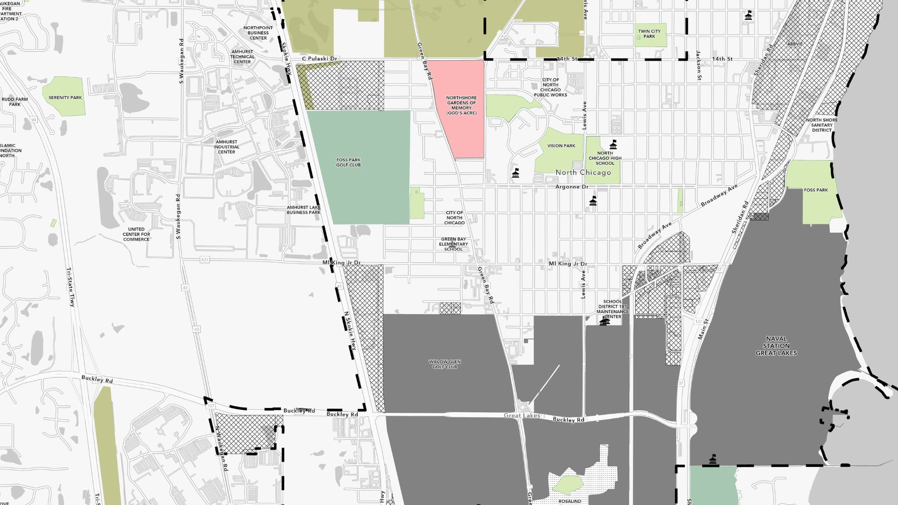

On a Saturday. At a parade. Waiting with residents as floats went by and asking what mattered to them. That's how this research worked. Fifty interviews. 180 surveys. Six weeks. Because the data you get from people who trust you is different from any other kind.
North Chicago's Hispanic population is more than 30% of residents — 16% foreign-born, roughly 21% of adult US citizens. In 2025, the school board was transitioning from an appointed to an elected model. A Lake County nonprofit wanted to understand one thing: what were the barriers to civic participation for this community? Not from the outside. From the inside.

Community-based research in North Chicago, IL — fieldwork at a community gathering
Standard research methods weren't going to work here. You don't send a survey link to a community that doesn't trust institutions and expect honest answers. So we went to where people already were: community festivals, a parade, gatherings. I conducted ~25 in-depth interviews in English and Spanish — with residents, community leaders, school board members, city employees, nonprofit workers. We deployed surveys with 180+ responses through community events and partner organizations.
But the most distinctive piece: we developed novel community engagement boards placed around North Chicago. Physical boards in the neighborhood asking "Where do you turn for help?" and mapping where residents work, play, and engage. The kind of question that reveals the actual trust networks in a community — not the official ones.
The research surfaced the actual gap between demographic presence and civic representation — and why it existed. Barriers weren't just about information access. They were about trust, language, institutional memory, and the specific ways civic participation had (or hadn't) been designed to include this community.
Filmed on-site at a North Chicago community festival — Juliana on community-based research as a methodology
Surveys tell you what people are willing to say in a structured format. Interviews tell you what they'll say when someone is listening. Community engagement boards tell you what they'll say when it feels safe and low-stakes. You need all three, in a community that's been studied before and is tired of it.
This work matters to me specifically because North Chicago is close to home. The research was delivered back to the community — not just to the client. That's what community-based participatory research means: the community is a partner, not a subject.